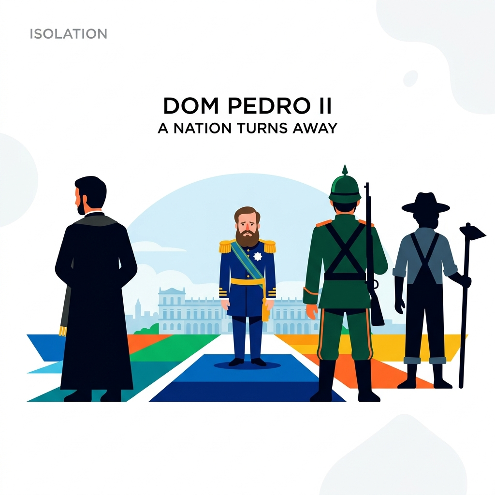
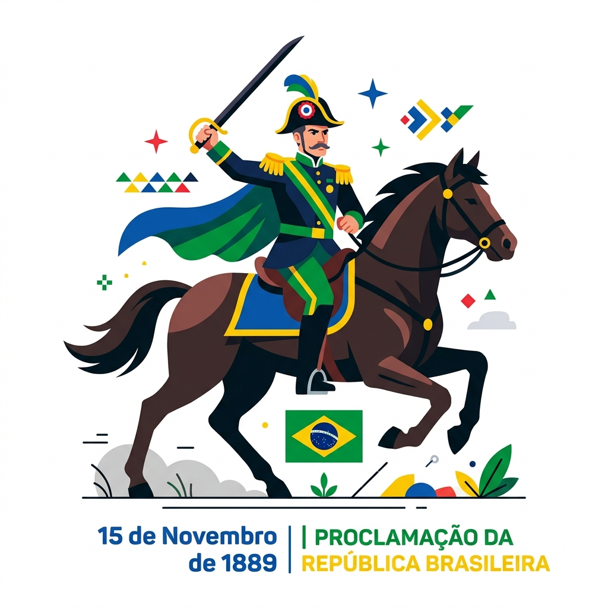
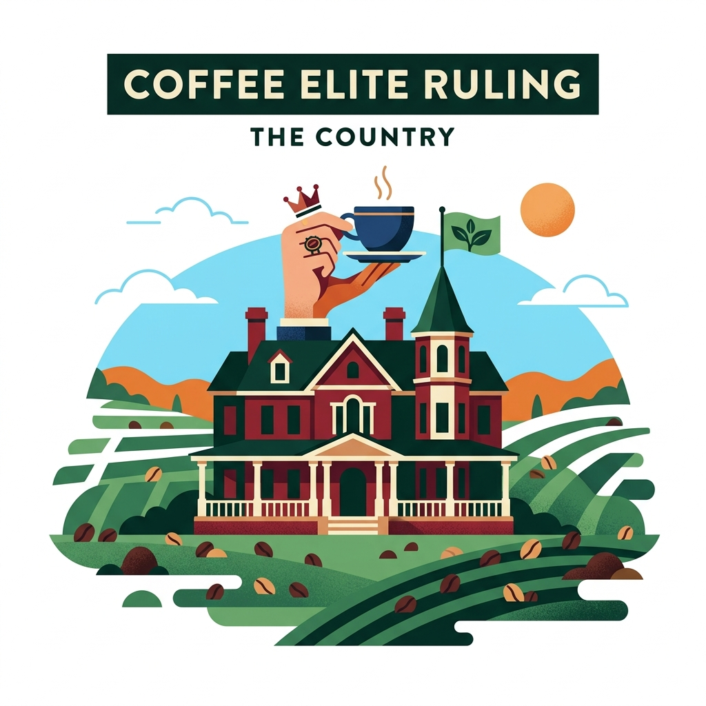
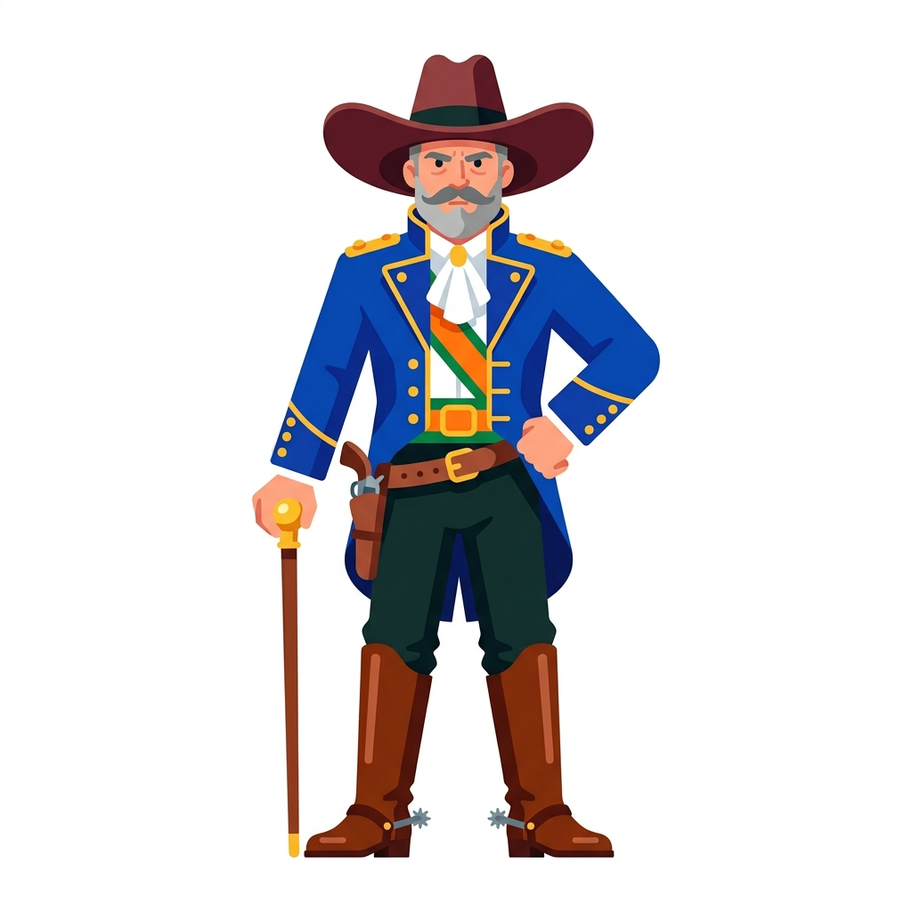
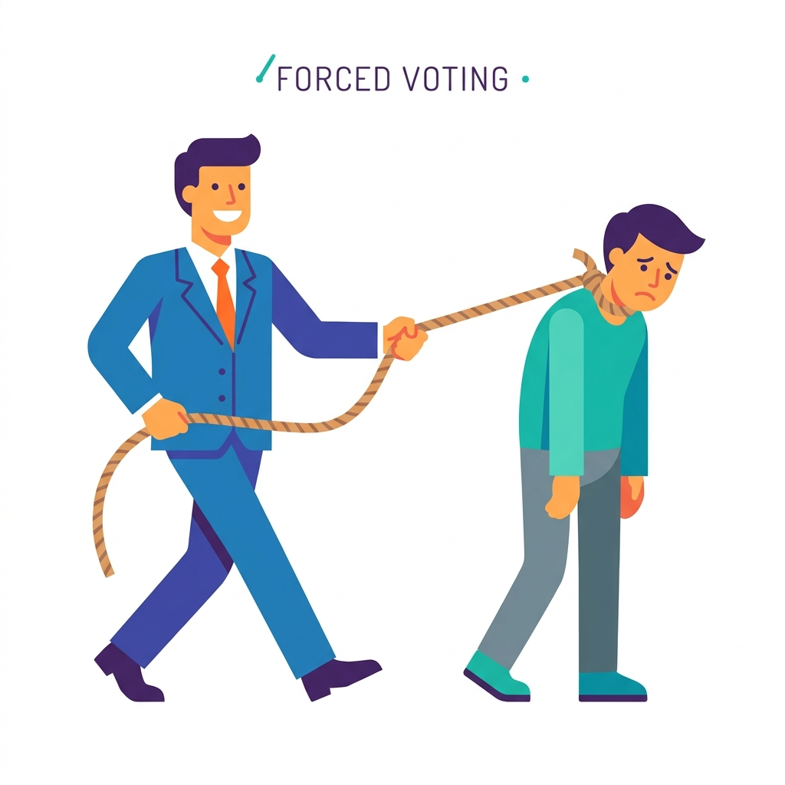

O Contexto de 1889

O Império estava enfrentando seus últimos dias. Entenda os fatores que levaram à queda da Monarquia:
- Abolição da Escravidão: Os fazendeiros ficaram inconformados por perder a mão de obra escrava e retiraram seu apoio ao Imperador Dom Pedro II.
- Movimento Republicano: Muitos setores da sociedade desejavam o federalismo (mais autonomia para que os estados pudessem se governar).
- A Questão Religiosa: O Governo Imperial e a Igreja Católica entraram em choque, fazendo com que o Imperador perdesse o suporte do clero.
- A Questão Militar: O Exército saiu vitorioso e fortalecido da Guerra do Paraguai e passou a exigir maior participação e influência na política nacional.
A Queda do Império

Como a Monarquia efetivamente chegou ao fim:
- Data: 15 de novembro de 1889.
- Liderança: Marechal Deodoro da Fonseca assumiu o comando das tropas militares.
- Ponto de Atenção 🚩: A Proclamação foi, na prática, um GOLPE MILITAR. A população assistiu aos eventos sem compreender muito bem, acreditando se tratar apenas de um desfile militar.
A República da Espada (1889-1894)
Os cinco primeiros anos do novo regime. O termo "Espada" se refere ao fato de que os presidentes desse período eram militares: os Marechais Deodoro da Fonseca e Floriano Peixoto.
O governo neste período foi centralizador e autoritário.
A Crise do Encilhamento
Ainda na República da Espada, o ministro Rui Barbosa tentou industrializar o Brasil rapidamente, estimulando a economia. Sua estratégia:
- Liberou a emissão de moeda (dinheiro sem lastro).
- Facilitou empréstimos bancários para abertura de novas empresas.
O resultado foi desastroso: Muitas pessoas pegavam empréstimos para criar "empresas fantasmas" na bolsa de valores. Isso gerou uma grave crise especulativa e altíssima inflação.
A Constituição de 1891
A primeira Constituição Republicana estabeleceu a nova base legal do Brasil:
- O Brasil adotou o sistema Presidencialista de governo.
- O Estado foi dividido em 3 Poderes (Executivo, Legislativo e Judiciário).
- O Voto passou a ser ABERTO (não havia cabine secreta, as pessoas declaravam seus votos).
República Oligárquica (1894–1930)

Com a saída dos militares da presidência, iniciou-se o domínio dos civis. Esta foi a fase mais longa da Primeira República, caracterizada pelo governo da "Oligarquia" (governo de poucos, exercido pela elite dominante).
O poder estava concentrado nas mãos dos grandes latifundiários, principalmente os produtores de café de São Paulo e Minas Gerais (a conhecida política do "Café com Leite").
O Coronelismo

No interior do Brasil, o poder local ficava nas mãos do Coronel (geralmente o maior fazendeiro e proprietário de terras da região).
Ele exercia forte influência política, social e econômica, controlando a estrutura da cidade e impondo a sua vontade sobre a população na hora das eleições.
O Voto de Cabresto

Como o voto estabelecido pela Constituição era ABERTO, os eleitores não tinham liberdade e privacidade.
O "Voto de Cabresto" era o mecanismo utilizado pelos Coronéis para garantir que a população votasse em seus candidatos indicados. As abordagens incluíam:
- Coação Física e Moral: Ameaças diretas de perda de emprego ou violência.
- Assistencialismo: Troca de favores eleitorais por mantimentos, pares de sapatos, remédios e ajuda financeira.
A Política dos Governadores
Criada pelo presidente Campos Sales, foi uma aliança estratégica entre o Governo Federal e os Governos Estaduais para frear a oposição.
O esquema funcionava como uma troca de favores:
- Os Coronéis garantiam os votos da população nos candidatos a Governador.
- Os Governadores garantiam apoio incondicional e os votos de seu estado para o Presidente da República.
- Em troca, o Presidente enviava verbas e não interferia nas fraudes e no domínio local exercido pelas oligarquias estaduais e pelos Coronéis.